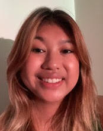

People
The Brain and Behavioral Dynamics Lab, part of the Psychology Department at Penn State, is looking for research assistants to study brain development in infants, children, and adolescents for Fall 2024. You can earn research project (PSY 494) credit or work study funds, and learn video, computer, and communication skills. Prior research experience and computer skills are a plus, but aren’t required. We are especially interested in students who have morning availability, computer skills, or are interested in developing skills in advertising, marketing, or public relations. You may apply by completing an application. At least a TWO semester commitment is required.
Lab Director

Rick O. Gilmore is Professor of Psychology, a Huck Institute of the Life Sciences faculty member, and an Associate of the Institute for Cyberscience. He earned his bachelor’s degree magna cum laude in Cognitive Science from Brown University, and master’s and doctoral degrees in Psychology from Carnegie Mellon University where he participated in the Center for the Neural Basis of Cognition (CNBC) training program in cognitive neuroscience. Gilmore’s research focuses on the development of visual perception and memory. He is particularly interested in the development of brain networks that enable perceivers to extract information about the layout of the environment, the shape of objects, and the speed and direction of self-movement from patterns of visual motion called optic flow. Gilmore is also keenly interested in developing tools and practices that make scientific research more open, transparent, and reproducible. He is co-founder and Co-Director of the Databrary.org data library, and is co-PI on the Play & Learning Across a Year (PLAY) Project. From 2008 to 2014, Gilmore served as the founding Director of Human Imaging at Penn State’s Social, Life, and Engineering Sciences Imaging Center (SLEIC). He has won the College of the Liberal Arts tenure-line faculty teaching award, leads the Open Data in Developmental Science (ODDS) initiative for the Penn State Child Study Center, and has had support for his research from the National Institutes of Health and the National Science Foundation.
Gilmore has served as president of the Centre Region Bicycle Coalition, the Acoustic Brew Concert Series, and the State College Community Theatre. An active radio amateur or ham (callsign W3TM), he is member of the Board of Directors of the Nittany Amateur Radio Club and served as the faculty adviser and K3CR license trustee for the Penn State Amateur Radio Club from 2018-2023.
Contact Information
114 Moore Building
Department of Psychology
The Pennsylvania State University
University Park, PA 16801
814-865-3664, voice
814-863-7002, fax
rogilmore AT-SIGN psu DOT edu
Current Staff
Andrea Seisler, Lab Manager
Andrea R. Seisler is the Laboratory Manager of the Brain and Behavioral Development Laboratory directed by Dr. Rick O. Gilmore. She has also been the Support and Authorizations Specialist at Databrary since November 2016. She received her bachelor’s and master’s degree in Biomedical Engineering from The Catholic University of America. During her graduate studies, she was a recipient of the Clare Booth Luce Fellowship award.
She completed MRI based neuroscience and orthopedics research while working at The National Institutes of Health from 2001-2007. After her move to State College, she served as an IRB Compliance Coordinator for the Human Research Protection Program at Penn State and then moved on in 2009 to manage the Human Electrophysiology Facility located at the Social, Life, and Enginineering Sciences Imaging Center through 2014.
She is active in Scouts BSA as a Committee Member in Troop 245 and an Executive Board Member of the Juniata Valley Council, BSA. She completed her Wood Badge leadership training course in September 2020 and was a Troop Guide on staff in the Spring of 2022. She has been the Assistant Scoutmaster of Administration for National Youth Leadership Training since 2021. In addition she enjoys dancing ballet and teaching at Dance Academy.
Contact Information
503 Moore BuildingDepartment of Psychology
The Pennsylvania State University
University Park, PA 16802
ars17 AT-SIGN psu DOT edu
Bruna Baldivieso, Undergraduate Research Assistant

Brianna Beamer, Undergraduate Research Assistant
Brianna Beamer is a Junior at Penn State University studying Psychology with a neuroscience focus. She works in the Gilmore Lab here at Penn State. She hopes to further her education and eventually earn a Ph.D. in Psychology to become a neuropsychologist. With this, she plans to help patients with damage in their central nervous system to help them to overcome the struggles they encounter. In Brianna’s free time, she enjoys baking, listening to music, and exploring the outdoors. A fun fact about Brianna is she is from Dallas, Texas!
Nicole Cruz, Undergraduate Research Assistant

Nicole Cruz is a sophomore at Pennsylvania State University pursuing an undergraduate degree in Psychology with a Neuroscience focus. She intends to graduate in the spring of 2025 and continue her education by pursuing an MD and/or Ph.D. in Neuropsychology. She is interested in research on topics about neurological disorders like Alzheimer’s disease. She is now an undergraduate research assistant working with Dr. Gilmore in his Brain and Behavioral Dynamics lab Gilmore Lab at Penn State. In her free time, she enjoys listening and playing music, traveling, and cooking.
Julia DiFulvio, Undergraduate Research Assistant

Peter Huang, Undergraduate Research Assistant

Peter is a senior student majoring in Biology with a focus on neuroscience option, he is currently participating in Legacy project in Gilmore Lab at Penn State. He is interested in how our brain works at neuron levels, especially visual perception. Peter plans to continue pursuing a Ph.D. in neuroscience after graduation from Penn State.
Recent Alumni
- Molly Askin
- Yinghe Liu
- Sydney (Belle) Peterson
- Madison Gehringer
- Oriana Franco
- Ysa Fernandez
- Yiming Qian, Ph.D.
- Cecelia Petrarca
- Kayla Moninger
- Kavya Jhaveri
- Bowen Deng
- Anjali Jivan
- Maureen Burke
- Sara Delmoral
- Kymberle Shields
- Shahir Rayes
- Michelle Mendez
- Rachel Chang
- Anna Capria
- Emily Herman
- Chelsea Davis
- Sandy Rayes
- Luka Kelly
- Amar Bhatia
- Zhichun Zhao
- Sarah Shahriar
- Ashton Dluzneski
- Alyssa Pandos
- Charmi Mehta
- Michael Dexheimer
- Hifzah Malik
- Raya Willoughby
- Katie Torres
- Shivani Patel
- Michael O’Neill
- Daved Fared
- Auburn Lattanzio
- Michelle Shade
- Sam Pai
- Jun Oh
- Amanda Thomas, Ph.D.
- William Adamiak
- Shivam Vedak, MBA, MD
- Dan Elbich
- Jeremy Fesi, Ph.D., Research Analyst, U.S. Marine Corps
- Lorena Gonzalez
- Ricky Groner
- Ken Hwang
- Matthew Lee
- Patricia Jones